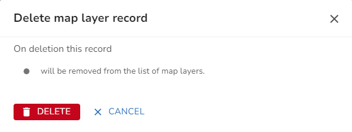
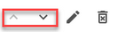

This is where you may configure the Base mapping for iManage Cloud together with any other map layers you wish to include in the Map pane. Currently iManage Cloud supports the following services from which you may retrieve map data:

To maintain your Map layers, click on the Map layers under Customisation in the Settings.
Add a new Map layer
•Click on the Add Map layer button.
•Enter the details as required.
•Once you are happy with your entries, click Done or Cancel to return without creating the entry.
For a complete description of all the entries please read the Map Layer details topic. Note: Some of the entries are dependent on the service Type.
Edit a Map layer
•Select the Map layer that you wish to edit from the list.
•Change the details as required.
•Once you are happy with your changes, click Done or Cancel to return without updating the entry.
Delete a Map layer
•Hover over the Map layer you wish to delete and the actions will be displayed.
•Select the delete icon outlined in red above.
•You will see a confirmation dialog e.g.

•Click  to delete the template or click CANCEL to return without deleting.
to delete the template or click CANCEL to return without deleting.
•The layer is deleted.
Moving Map layers up and down the Layer control
You may move the Map layers up and down the list but your Base Mapping should be at the bottom of the list. Note: The order the layers are displayed here is the same order that they are displayed in the Layer control.
•Hover over the Map layer you wish to move and the actions will be displayed.

•Select either the up or down arrow outlined in red above to move the selected layer up or down respectively.